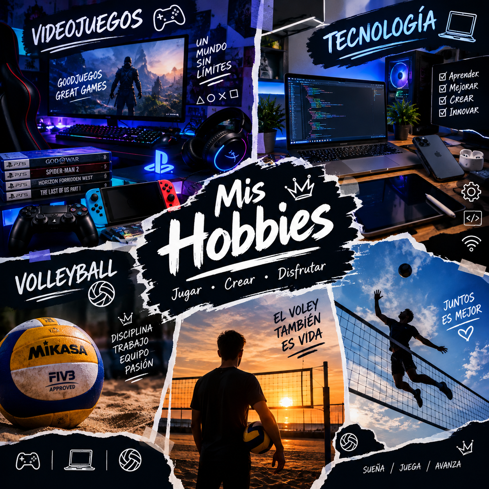

My name is Kevin and this is my English blog.
Here I will share some aspects of my life,
my family, my hobbies, my interests and my
future goals.
I will also talk about a tourist place in
Colombia, a current event and two important
topics: critical thinking and media literacy,
and crime and punishment.
MY BLOG
Latest Posts
Discover my experiences, interests and ideas.
FAMILY
My Family
The People I Love
Family is one of the most important things in my life. Throughout my life, my parents have
taught me many important things. They have given me advice, supported me in difficult moments
and helped me become the person I am today.
My parents are the people I love the most in this world. I am very grateful for everything they
have done for me and for all the moments we have shared together.
A very important person also came into my life: my niece Celeste. She is a very special person
to me. I have taken care of her and loved her as if she were my own daughter. Spending time with
her has given me many beautiful moments and has taught me about love, responsibility and family.
For me, family is not only about sharing the same last name. It is about supporting each other,
being there in difficult moments and creating memories together.

HOBBIES
My Hobbies and Interests
Video Games, Technology and Programming
One of my favorite hobbies is playing video games. I enjoy them because they are a good way to
spend my free time. They can also help me relax when I am having a difficult day or when I am
feeling stressed.
For me, video games are more than just entertainment. They allow me to explore different worlds,
solve problems and enjoy interesting stories and challenges.
Another important interest in my life is technology. I find technology very interesting because
it changes constantly. Every day, new devices, applications and technologies are created to make
different activities easier and more efficient.
Recently, I have become more interested in programming. I think programming is a very
interesting and flexible field because there are many different ways to create things with code.
A programmer can build applications, websites, systems and many other useful tools.
Learning programming has made me realize that technology is not only something we use every day;
it is also something we can create.
My Journey into Software Development
I am currently studying programming, and I am very excited about this field. Learning how
software works and understanding how applications are created has been a very interesting
experience for me.
Programming can sometimes be challenging, but I enjoy learning new concepts and finding
solutions to problems. Every project gives me an opportunity to learn something new and improve
my skills.
My main goal is to finish my studies and eventually complete a degree in Software Engineering. I
would like to continue developing my knowledge in programming, technology and software
development.
I know that achieving this goal will require dedication, discipline and continuous learning, but
I am excited about the future and everything I can learn along the way.
I hope that one day I can use my knowledge to create useful software and contribute to the world
of technology.
My family is one of the most important parts
of my life. My family members support me,
teach me important values and share many
special moments with me.
We enjoy spending time together, talking,
watching movies and celebrating important
occasions.
🎙️ Listen to my presentation
02 — HOBBIES
My Hobbies and Interests
One of my main interests is technology.
I enjoy learning about computers, software
and programming.
I also enjoy playing video games during
my free time. Video games are entertaining,
but they can also help develop problem-solving
and strategic thinking skills.
03 — WORK & FUTURE
My Work and Future Goals
I am interested in technology and software
development. Learning programming allows me
to create useful applications and solve
different problems.
One of my goals is to continue improving
my programming skills and gain more experience
in software development.
04 — TRAVEL
A Tourist Place in Colombia
Colombia is a country with beautiful landscapes,
interesting cities and many tourist destinations.
One place I would like to highlight is
Monserrate in Bogotá.
It is one of the most recognizable tourist
attractions in the city.
Visitors can enjoy the view of Bogotá,
explore the surroundings and learn about
the cultural importance of the place.
05 — CURRENT EVENTS
Current Events
Current events are important because they
help us understand what is happening in
our country and around the world.
For this section, I will analyze a recent
news story and explain the main facts,
the people involved and its impact on society.
📰 News analysis
What happened?
Write the main facts of the news story here.
Why is it important?
Explain why this event is relevant.
06 — FORMATIVE COMPONENT
Critical Thinking and Media Literacy
Critical thinking is the ability to analyze
information carefully before accepting it
as true.
Media literacy is the ability to access,
understand, evaluate and create information
through different types of media.
Why are they important?
Today, people receive information from social
media, websites, television, videos and other
digital platforms. Not all information is
reliable or accurate.
Check the source.
Compare information from different sources.
Check the publication date.
Look for evidence.
Think before sharing information.
💭 My reflection
I think critical thinking is important
because we should not believe everything
we see on the internet. We need to ask
questions, verify information and make
decisions based on evidence.
07 — FORMATIVE COMPONENT
Crime and Punishment
Crime is an action that violates the law.
Different countries have different laws
and punishments depending on the type
and seriousness of the crime.
Important vocabulary
CrimeDelito
CriminalDelincuente
VictimVíctima
LawLey
PunishmentCastigo
JusticeJusticia
EvidenceEvidencia
TrialJuicio
My reflection
Laws are important because they establish
rules for society and help protect people's
rights. Justice systems use laws and evidence
to determine responsibility and apply
appropriate legal consequences.